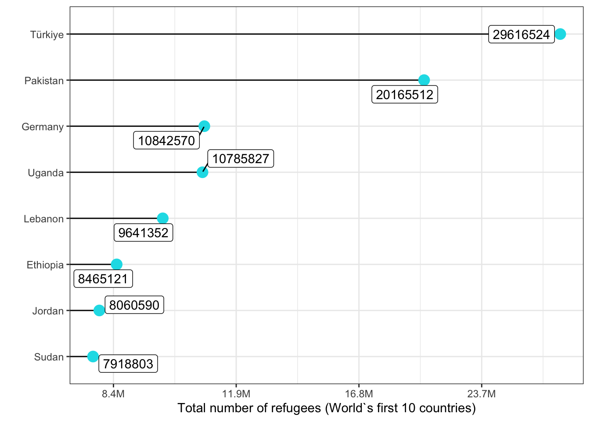

population <- readr::read_csv('https://raw.githubusercontent.com/rfordatascience/tidytuesday/master/data/2023/2023-08-22/population.csv')
library(tidyverse)
library(janitor)
library(ggrepel)
library(scales)
library(plotly)Refugiados
2023
Plot
ggplot
ggrepel
TidyTuesday
Plotly
TidyTuesday del 22 de agosto de 2023
Para el TidyTuesday de la semana del 22 de agosto (Rfordatascience, 2023), el tema es sobre refugiados. Después de leer la descripción que podemos encontrar en la página de github, he decidido hacer un gráfico en el que se incluyan los diez países que más refugiados han recibido.
Cómo siempre, el primer paso es cargar el dataset y los paquetes que usaremos para hacer el gráfico (qué, además de un gráfico estático, también usaremos plotly para añadir un poco de interacción).
Despúes de cargar los datos, hay que observarlos y limpiarlos, de forma que todos los datos resultantes sean adecuados para hacer el gráfico.
glimpse(population)Rows: 64,809
Columns: 16
$ year <dbl> 2010, 2010, 2010, 2010, 2010, 2010, 2010, 2010, 2010…
$ coo_name <chr> "Afghanistan", "Iran (Islamic Rep. of)", "Iraq", "Pa…
$ coo <chr> "AFG", "IRN", "IRQ", "PAK", "ARE", "CHI", "GAZ", "IR…
$ coo_iso <chr> "AFG", "IRN", "IRQ", "PAK", "EGY", "CHN", "PSE", "IR…
$ coa_name <chr> "Afghanistan", "Afghanistan", "Afghanistan", "Afghan…
$ coa <chr> "AFG", "AFG", "AFG", "AFG", "ALB", "ALB", "ALB", "AL…
$ coa_iso <chr> "AFG", "AFG", "AFG", "AFG", "ALB", "ALB", "ALB", "AL…
$ refugees <dbl> 0, 30, 6, 6398, 5, 6, 5, 5, 49, 5, 5, 0, 0, 6, 6, 66…
$ asylum_seekers <dbl> 0, 21, 0, 9, 0, 0, 0, 0, 20, 0, 0, 5, 10, 92, 5, 26,…
$ returned_refugees <dbl> 0, 0, 0, 0, 0, 0, 0, 0, 0, 0, 0, 0, 0, 0, 0, 0, 0, 0…
$ idps <dbl> 351907, 0, 0, 0, 0, 0, 0, 0, 0, 0, 0, 0, 0, 0, 0, 0,…
$ returned_idps <dbl> 3366, 0, 0, 0, 0, 0, 0, 0, 0, 0, 0, 0, 0, 0, 0, 0, 0…
$ stateless <dbl> 0, 0, 0, 0, 0, 0, 0, 0, 0, 0, 0, 0, 0, 0, 0, 0, 0, 0…
$ ooc <dbl> 838250, 0, 0, 0, 0, 0, 0, 0, 0, 0, 0, 0, 0, 0, 0, 0,…
$ oip <dbl> NA, NA, NA, NA, NA, NA, NA, NA, NA, NA, NA, NA, NA, …
$ hst <dbl> NA, NA, NA, NA, NA, NA, NA, NA, NA, NA, NA, NA, NA, …data <- population |>
filter(refugees >= 100) |>
select(year, coo_name, coo_iso, coa_name, coa_iso, refugees, asylum_seekers) |>
group_by(coa_iso)
data <- data |>
select(year, coa_name, coa_iso, refugees, asylum_seekers) |>
group_by(coa_iso)
data_plot <- data |>
group_by(coa_name) |>
summarise(refugees_sum = sum(refugees),
asylum_sum = sum(asylum_seekers)) |>
ungroup()
data_plot <- data_plot |>
filter(refugees_sum >= 10000 & asylum_sum >= 10000)
data_plot_1 <- data_plot |>
filter(refugees_sum >= 7000000)
data_plot_2 <- data_plot |>
filter(refugees_sum < 7000000) |>
adorn_totals("row") |>
filter(coa_name == "Total")
data_plot_2$coa_name[1] <- "Others"
data_plot_1 <- data_plot_1 |>
arrange(refugees_sum)
data_plot <- rbind(data_plot_1, data_plot_2)Después de tener los datos tal y como los necesitamos, es hora de hacer ambos gráficos (estático e interactivo.
plot <- data_plot_1 |>
mutate(coa_name=factor(coa_name, levels=coa_name)) |>
ggplot(aes(x = coa_name, y = refugees_sum)) +
geom_segment(aes(xend=coa_name, yend=0)) +
geom_point(size = 4, color = "#0FDEE8") +
coord_flip() +
xlab("") +
ylab("Total number of refugees (World`s first 10 countries)") +
theme_bw() +
geom_label_repel(aes(x = coa_name, label = refugees_sum)) +
scale_y_continuous(trans = log2_trans(),
breaks = trans_breaks("log2", function(x) 2^x),
labels = label_number(scale_cut = cut_long_scale()))
interactive_plot <- data_plot_1 |>
mutate(coa_name=factor(coa_name, levels=coa_name)) |>
ggplot(aes(x = coa_name, y = refugees_sum)) +
geom_segment(aes(xend=coa_name, yend=0)) +
geom_point(size = 4, color = "#FF7E0F") +
coord_flip() +
xlab("") +
ylab("Total number of refugees (World`s first 10 countries)") +
theme_bw() +
scale_y_continuous(trans = log2_trans(),
breaks = trans_breaks("log2", function(x) 2^x),
labels = label_number(scale_cut = cut_long_scale()))
plot
ggplotly(interactive_plot)
References
Rfordatascience. (2023). TidyTuesday 2023-08-22 · rfordatascience/tidytuesday. https://github.com/rfordatascience/tidytuesday/blob/master/data/2023/2023-08-22/readme.md